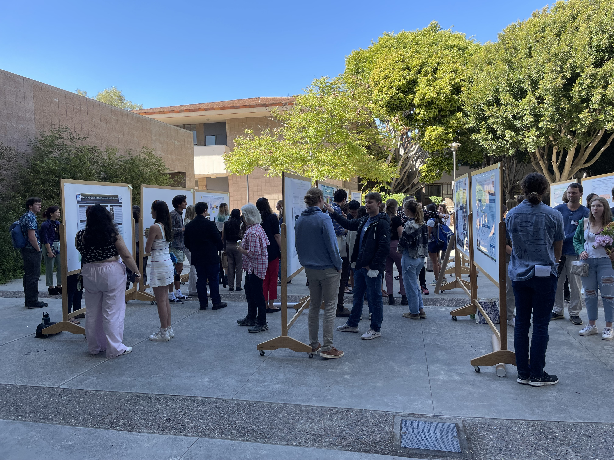
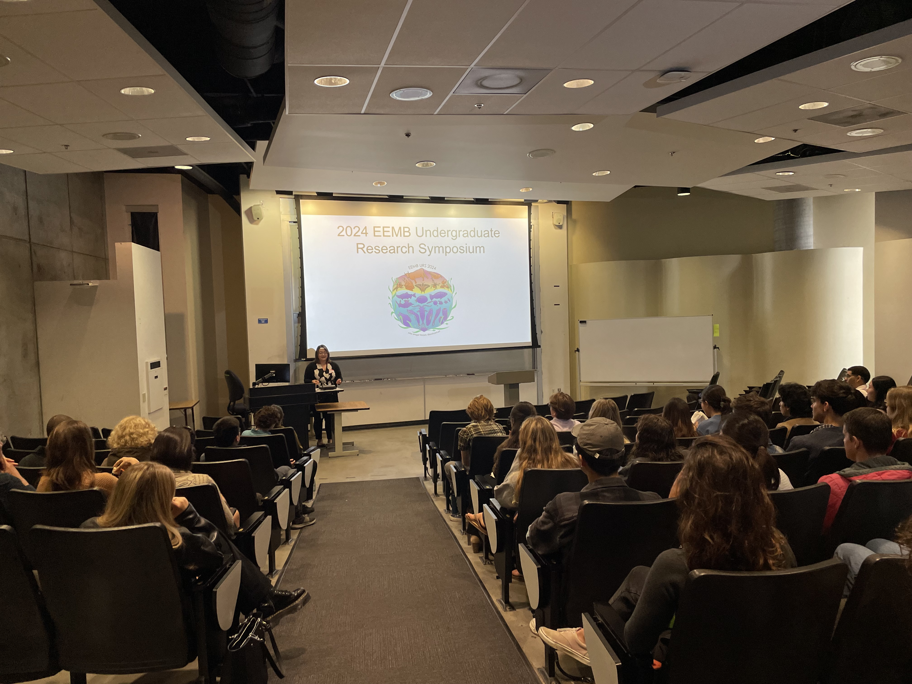

Scientific Outreach & Academic Service
UCSB EEMB Undergraduate Research Symposium Planning Committee

I am so proud to be one of the founding members of the UC Santa Barbara’s Ecology, Evolution, and Marine Biology’s Annual Undergraduate Research Symposium (EEMB-URS, pronounced “embers”).
Since it’s start in 2021, this symposium has grown and developed so much, and I love seeing the undergraduate research community come together to celebrate their work, build connections, and develop critical skills in science communication.
Publication
In 2023, we published a roadmap to creating undergraduate research symposia, and conducted a study on how our symposium may increase the retention of students of Excluded Identities in STEM, in the journal Oceanography (Heard et al. 2023). Our resources for building an undergraduate research symposium can be found on this github link: https://github.com/madisonheard1/EEMBURS. Here, you can find our comprehensive handbook on how to build a symposium, survey questions (developed with the UCSB IRB), presentation judging rubrics, resources for students on abstract writing, and more!
Invited talks
I am excited to share our resources, findings, and journey with others who are interested in creating similar symposia, and was honored to give invited talks at the UCSB Inclusive Teaching Symposium and UC Berkeley’s Plant and Microbial Biology Department’s Seminar. Please do not hesitate to reach out if you are interested in learning more about our symposium and resources!
UC Berkeley PMB Student & Post-Doc Seminar (2024): “Excluded Identity Retention in STEM: A Roadmap for Inclusive Undergraduate Research Symposia” C.L. Nordheim-Maestas, M.P. Heard, C. McKinley, Z. Zilz, V.A. Jones, B.A. Vincent, and E.M. Caves
UC Santa Barbara Inclusive Teaching Symposium (2024): “Excluded Identity Retention in STEM: A Roadmap for Inclusive Undergraduate Research Symposia” C.L. Nordheim-Maestas, Z. Zilz, M.P. Heard, C. McKinley, V.A. Jones, B.A. Vincent, and E.M. Caves
Committee roles:
- General Member: 2024 Symposium
- President: 2023 Symposium
- Treasurer: 2022 Symposium
Resources for first-time presenters:
- Ecological Society of America’s Strategies for Ecology Education, Diversity and Sustainability (SEEDS) UCSB Chapter Workshop Coordinator and Presenter: “How to Write a Research Conference Abstract” – 2024



Outreach Talks
Science by the Pint Outreach Talk: “Hopping Through Hard Times: The Life of Californian Frogs” (2025) C.L.Nordheim-Maestas & C. Mallory Draughtsman Aleworks
Brattleboro Union High School & Windham Regional Career Center Career Talk Presenter: “Exploring the World of Amphibian Disease Ecology: A Career in Saving Frogs” (2024) C.L. Nordheim-Maestas
UCSB FUERTE - Field-based Undergraduate Engagement through Research, Teaching, and Education Program (Invited Talk): “Exploring the Hidden World of Macroinvertebrates and the Frog-Killing Fungus” (2024) C.L. Nordheim-Maestas
Science by the Pint Outreach Talk: “Beyond the Pond: Exploring the Role of Aquatic Bugs in Frog Disease Risk” (2024) C.L. Nordheim-Maestas Draughtsman Aleworks
Sierra Nevada Aquatic Research Laboratory UC California Ecology and Conservation Course Research and Career Panel Presenter (2023)
Science by the Pint Outreach Talk: “Amphibian Disease: the Not-So-Fun Fungus” (2023) C.L. Nordheim Draughtsman Aleworks
Science by the Pint Outreach Talk: “Frog Vaccine Development” (2022) C.L. Nordheim Night Lizard Brewing Co
Blue Oak Ranch Reserve UC California Ecology and Conservation Course Research and Career Panel Presenter (2021)
UCSB Departmental Service Roles
UCSB EEMB Graduate Peer Mentorship Program Mentor – 2022-Present
UCSB EEMB Graduate Student Advisory Committee (GSAC) 2021-2023
UCSB EEMB Graduate Research Symposium Planning Committee – 2022 & 2023
Treasurer: 2023 Symposium
General Member: 2022 Symposium
UCSB EEMB Undergraduate Lab Open House Volunteer – 2022
University of Pittsburgh Outreach & Service
University of Pittsburgh Survivor Support Network Member – 2020 - 2021
Carnegie Science Center SciTech Volunteer – 2020